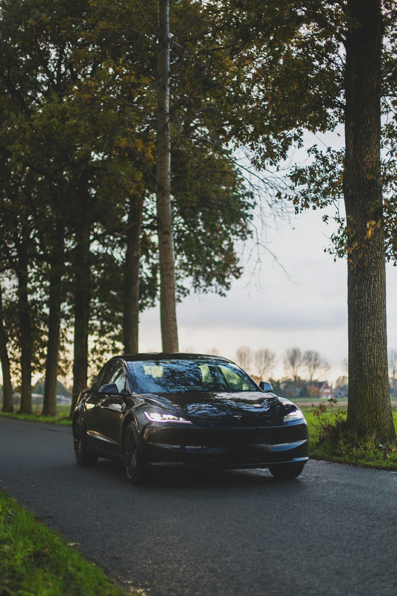
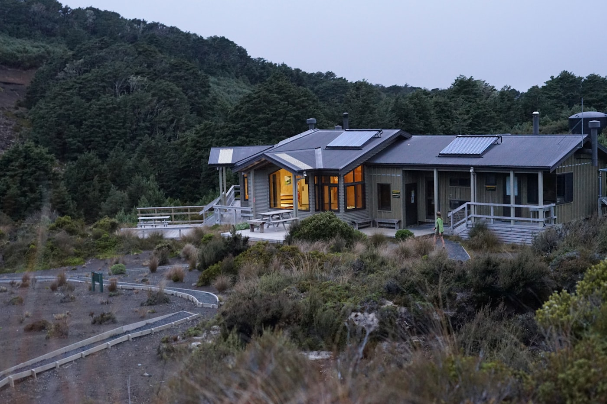
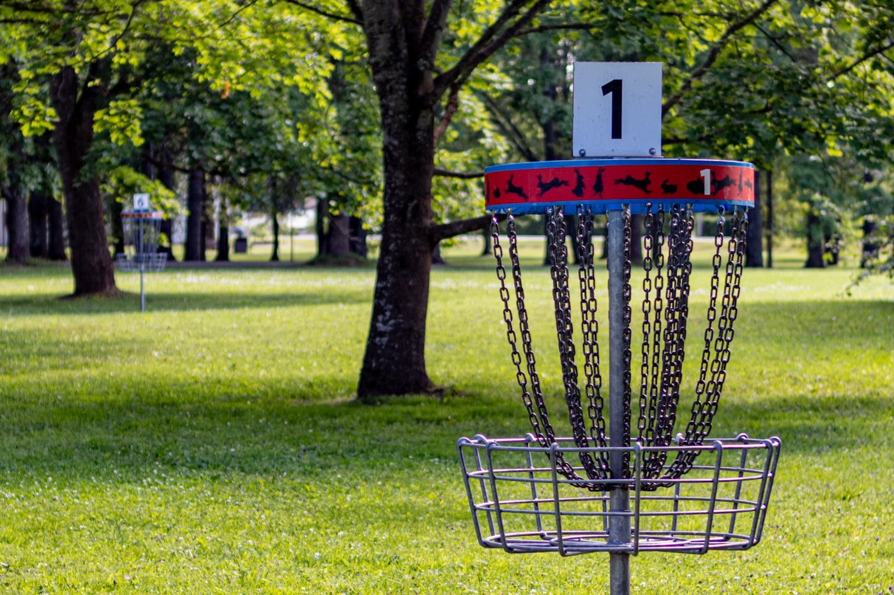

Donnybrook, Victoria



I like helping people, especially the people I work with. If a process is clunky or a tool is getting in the way, I want to fix it. Making someone's work day a bit easier is the bit I enjoy most.
I've been playing with AI for the same reason: not as a toy for its own sake, but to see how these new friends can actually take work off people's plates and get the best out of them.
I'm pretty keen on green energy at home. Solar on the roof, a Tesla Powerwall in the garage, and Spirit of Fire (my Model 3) all talk to each other so surplus sun fills the battery and the car instead of just dumping to the grid.
It's half environmental, half a puzzle I enjoy: cheap overnight power, free daytime windows, and automation that actually makes the house run cleaner without me babysitting it every hour.
When friends are around the table, I love a good board game. Dice Thrones is a favourite — quick rounds, big character moments, and just enough chaos that nobody's sitting quietly waiting for their turn.
Anything that gets people talking, laughing, and plotting together is my kind of night.
When I'm not doing that I'm usually on a disc golf course, at a table tennis table, in a computer game, or out on the road. Spirit of Fire and I have been covering a fair bit of Australia.
Photos are generic stock (Unsplash), not my own house or car — just the vibe. Resume stays in the Google Doc you already have.